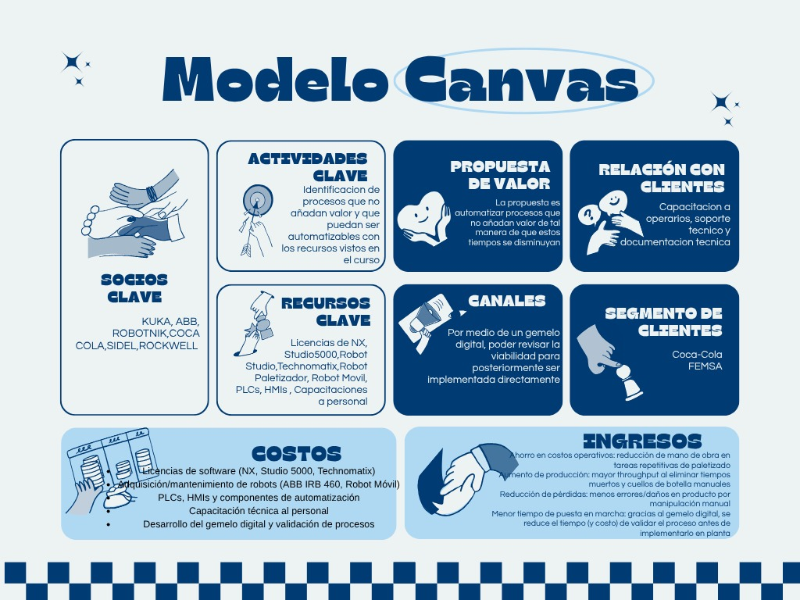
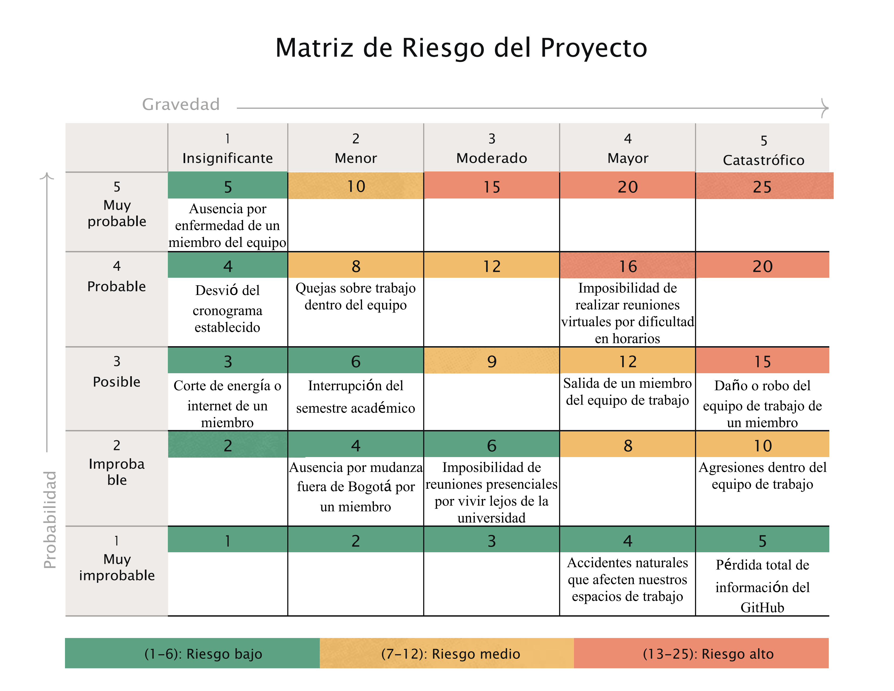
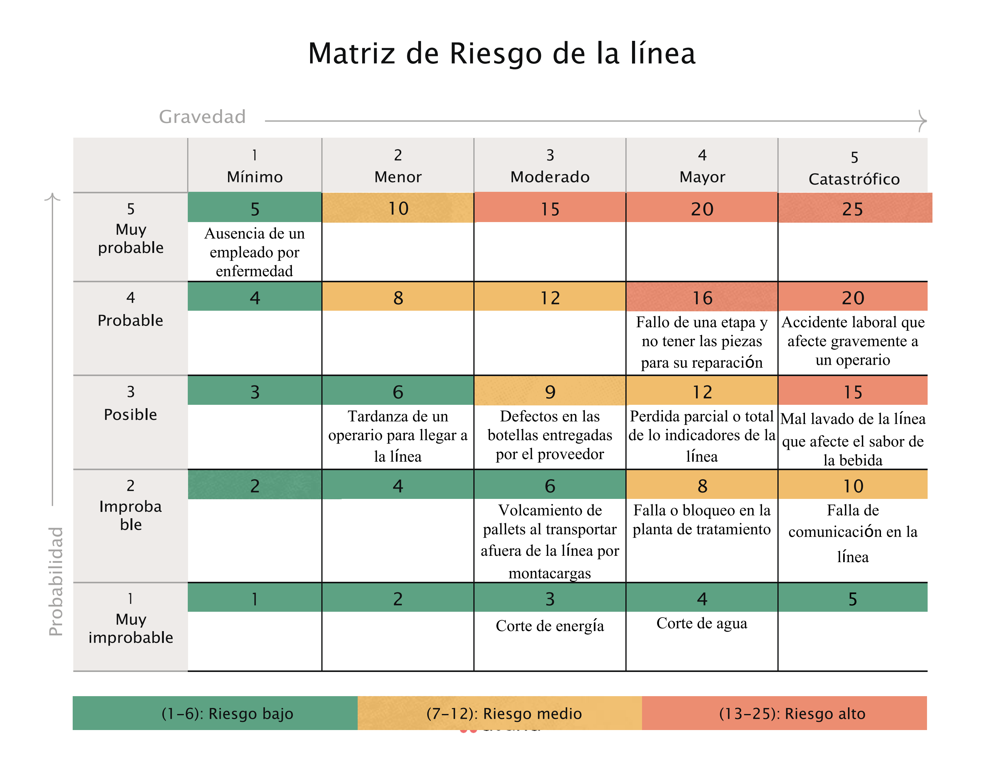
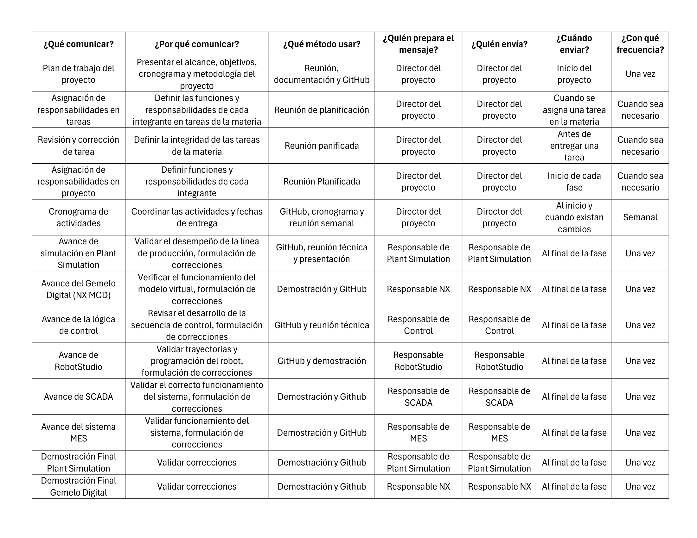
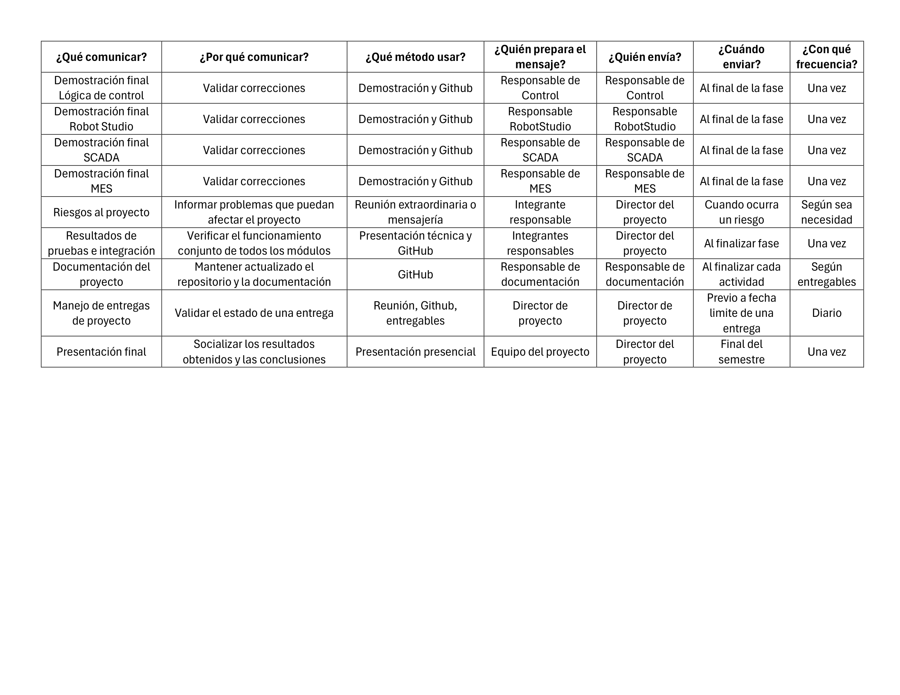
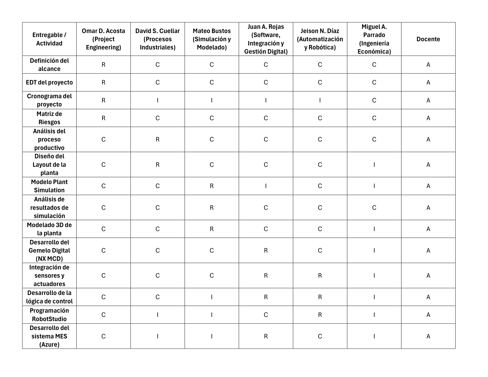

Como complemento a la planeación del proyecto, se desarrolló un Business Model Canvas que resume los principales elementos del modelo de negocio de la solución propuesta, incluyendo la propuesta de valor, segmentos de clientes, actividades clave, recursos, socios estratégicos, estructura de costos y fuentes de ingresos.


El alcance define los límites del proyecto y las entregas esperadas. Se estructuró mediante la Estructura de Desglose del Trabajo (EDT).


Planificación temporal del proyecto mediante un cronograma detallado que define las actividades, duraciones y dependencias.


Se realizó la evaluación económica del proyecto mediante el análisis de los costos de inversión (CAPEX), costos operativos (OPEX), beneficios esperados y flujo de caja. A partir de esta información se obtuvieron los principales indicadores financieros para evaluar la viabilidad de la propuesta.

Se realizó la identificación y selección de los principales recursos requeridos para la implementación del proyecto, considerando equipos, componentes industriales, software y costos asociados. Como resultado se elaboró una matriz de adquisiciones que consolida la información técnica y económica de los elementos necesarios para el desarrollo de la solución.

Identificación y análisis de riesgos asociados al desarrollo del proyecto.



Se estableció un plan de comunicaciones para garantizar el intercambio oportuno de información entre los integrantes del proyecto y los diferentes interesados, facilitando el seguimiento de actividades y la toma de decisiones durante el desarrollo.


Se definieron los roles y responsabilidades de cada integrante del proyecto mediante una matriz RACI, permitiendo identificar claramente quién es responsable, quién aprueba, quién debe ser consultado y quién debe mantenerse informado en cada actividad.
